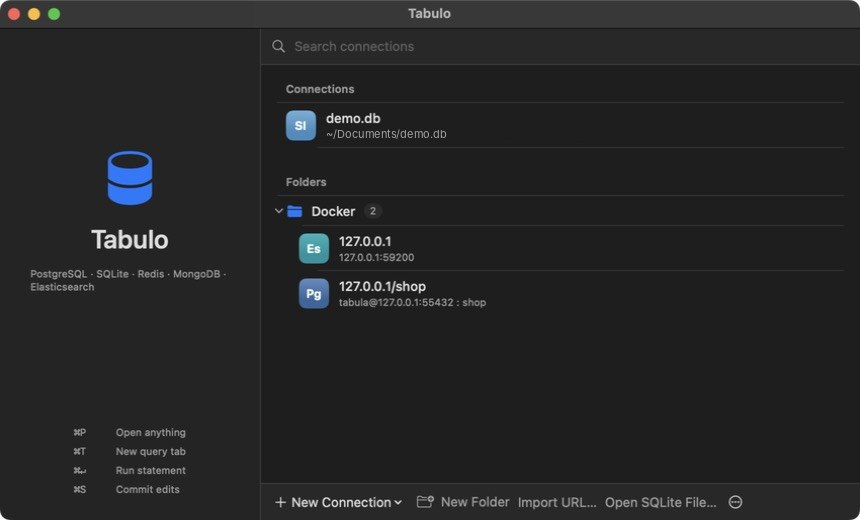

Your first connection
A five-minute tour. You'll open a SQLite database, look at a table, filter it, run a query, and make an edit you can review before it's saved.
You need any SQLite file. If you don't have one, the Tabulo source includes samples/demo.db with customers, orders and a big_orders view. This tour uses it.

- Open the database
Start Tabulo. In the welcome window click Open SQLite File… and choose the file. Tabulo saves it as a connection and opens a workspace window for it.
- Open a table
The sidebar lists tables and views. Click
ordersonce to preview it in a tab. Double-click it to keep the tab open when you pick another table. - Filter the rows
Click Filter (⌥⌘F). Pick a column, an operator and a value, or type a WHERE clause in the second line, for example
status = 'shipped' AND total > 1000. Click Apply. - Follow a foreign key
customer_idcells show a small arrow. Click it to open the customer in a new tab, already filtered to that row. - Edit a cell
Back on
orders, double-click anotecell, typepriorityand press ↵. The cell turns yellow and the bottom bar says 1 pending change. Nothing has been written yet.
- Review, then commit or discard
Click Review… (⇧⌘S) to see the exact
UPDATEstatement. Click Commit to write it, or close the window and click Discard to throw the change away. - Run a query
Press ⌘T for a query tab, type SQL and press ⌘↵. Results open in a grid below the editor.
SELECT c.name, c.city, COUNT(o.id) AS orders, ROUND(SUM(o.total), 2) AS revenue FROM customers c JOIN orders o ON o.customer_id = c.id GROUP BY c.id ORDER BY revenue DESC; - Jump anywhere
Press ⌘P and type part of a table name to open it.